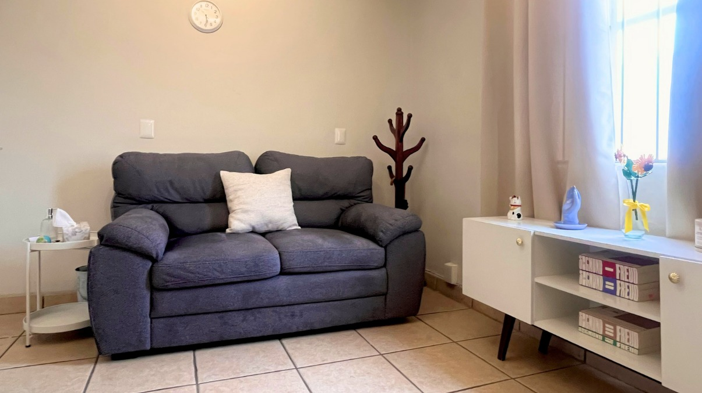

Psicóloga · Psicoterapia psicoanalítica
Migdalia Valadez
Un espacio para comprender lo que estás viviendo, a tu ritmo y desde tu propia historia.
Sobre mí
Soy Migdalia Valadez, psicóloga con enfoque psicoanalítico. Trabajo principalmente con adolescentes y adultos que atraviesan momentos de ansiedad, depresión, duelo, crisis personales o dificultades que parecen repetirse aun cuando han intentado resolverlas de distintas maneras.
Mi forma de trabajar parte de que no todo lo que sentimos o hacemos tiene una explicación inmediata. En terapia buscamos comprender los conflictos, vínculos y patrones que participan en aquello que hoy genera malestar.
Cada proceso es distinto. No trabajo desde fórmulas iguales para todos; el trabajo se construye a partir de lo que cada persona trae a sesión, de sus preguntas y de aquello que poco a poco puede empezar a ponerse en palabras.
No siempre podemos cambiar aquello que todavía no comprendemos.
Agenda tu citaMi enfoque
¿Qué es la psicoterapia psicoanalítica?
Es un tipo de psicoterapia que no se centra únicamente en eliminar un síntoma, sino en comprender los conflictos, patrones y vínculos que participan en él. Parte de la idea de que muchas de nuestras dificultades tienen sentido dentro de la historia particular de cada persona, aun cuando ese sentido no sea evidente al inicio.
¿Cómo son las sesiones?
Las sesiones son un espacio de conversación donde la persona puede hablar con libertad de lo que le preocupa, le inquieta o simplemente aparece. No se sigue un guion fijo de preguntas; el proceso se construye a partir de lo que cada quien va trayendo.
¿Qué puede esperar una persona del proceso?
Un espacio de escucha atenta y sin juicio, en el que las cosas no siempre se resuelven de inmediato. Comprender un conflicto suele llevar tiempo, y ese tiempo es parte del trabajo, no un obstáculo para él.
¿Por qué se exploran experiencias, relaciones y patrones?
Porque muchas veces lo que hoy nos afecta está relacionado con experiencias pasadas, vínculos importantes o formas de responder que se repiten sin que las notemos del todo. Explorar esas conexiones ayuda a comprender con más claridad lo que se está viviendo.
Cada proceso terapéutico es individual: no se trabaja a partir de una fórmula idéntica para todas las personas.
¿En qué puedo acompañarte?
No necesitas tener un diagnóstico para comenzar un proceso terapéutico.

Un espacio para hablar, pensar y comprender aquello que hoy genera malestar.
Preguntas frecuentes
Es un primer encuentro para conversar sobre lo que te trae a terapia y para que puedas conocer cómo trabajo. No es necesario llegar con la situación completamente ordenada; el espacio está pensado para ir construyéndolo juntas.
No. Puedes iniciar un proceso terapéutico sin contar con un diagnóstico previo. Muchas personas llegan simplemente con un malestar que quieren comprender mejor.
Sí, ofrezco sesiones en línea además de la modalidad presencial en Zapopan. Ambas opciones mantienen el mismo formato y duración de sesión.
Puedes agendar directamente en línea a través de AgendaPro, donde encontrarás los horarios disponibles para consulta presencial o en línea.
Agenda tu cita
Psicoterapia individual presencial
$700 MXN
Av. Tepeyac 1163
Chapalita Sur
Zapopan, Jalisco